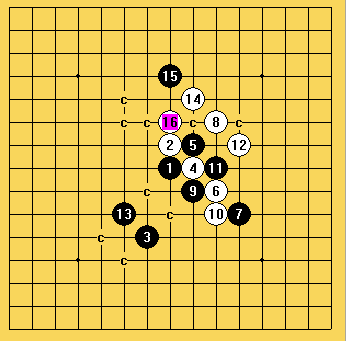
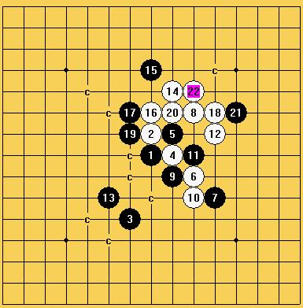
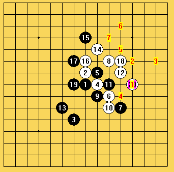

13后黑是否必胜？
首页
五子棋交流
#1 13后黑是否必胜？ 作者：九剑 发表时间：2008-10-23 20:58:43
=======上图对应的爱五子棋谱代码如下，以便你拆解：========
h8h9g5i8i9j7k6j10i7j6j8k9f6
======================================================如不必胜，白如何走为好？
#2 Re:13后黑是否必胜？ 作者：顿条 发表时间：2008-10-23 21:54:02
感觉白棋可以利用先手交换些优势
#3 Re:13后黑是否必胜？ 作者：笑雨辰 发表时间：2008-10-23 23:50:35
感觉白必了。。
#4 Re:13后黑是否必胜？ 作者：笑雨辰 发表时间：2008-10-24 0:06:21
#5 Re:13后黑是否必胜？ 作者：朝}者 发表时间：2008-10-24 5:20:52
白14手后黑必胜 上帖发错图
本人愚见 只能够说黑太强了 太有远见了
#6 Re:13后黑是否必胜？ 作者：朝}者 发表时间：2008-10-24 5:29:41
图老打错 大哥帮忙把上面贴删除我重发
大哥帮忙把上面贴删除我重发
#7 Re:13后黑是否必胜？ 作者：朝}者 发表时间：2008-10-24 5:36:51
我认为14落子后黑就必胜了
愚见一：
=======上图对应的爱五子棋谱代码如下，以便你拆解：========
h8h9g5i8i9j7k6j10i7j6j8k9f6i11h12h10g10j12g7e5g9g8h6f4e9f8f10
======================================================愚见二：
=======上图对应的爱五子棋谱代码如下，以便你拆解：========
h8h9g5i8i9j7k6j10i7j6j8k9f6i11h12h10g10g9f8g7f7f9h4i3h5
======================================================上面有错的图予于谅解 
#8 Re:13后黑是否必胜？ 作者：笑雨辰 发表时间：2008-10-24 7:41:11
楼上的你把18下8的右边试下
#9 Re:13后黑是否必胜？ 作者：nara 发表时间：2008-10-24 18:22:16

白必胜了吧
#10 Re:13后黑是否必胜？ 作者：朝}者 发表时间：2008-10-24 19:30:41
雨辰的意思是这样吗 要白攻？ 最后双三？ 我的结论还是黑胜 你发下你攻的图 我认为黑17手位置最强防在g10的位置 如果我是黑方我不会把17手放在放在i10上
=======上图对应的爱五子棋谱代码如下，以便你拆解：========
h8h9g5i8i9j7k6j10i7j6j8k9f6i11h12h10g10k10g9l10i10n10m10l8m7l11g7e5f10e11g11
======================================================有异议认为白胜请发个完整的图 
#11 Re:Re:13后黑是否必胜？ 作者：兔子哥哥 发表时间：2008-10-24 20:32:34
17在G10白真的杀了。如图
#12 Re:13后黑是否必胜？ 作者：朝}者 发表时间：2008-10-26 17:59:20
楼上的小兔子哥哥 您不认为19手放g8更好些吗
=======上图对应的爱五子棋谱代码如下，以便你拆解：========
h8h9g5i8i9j7k6j10i7j6j8k9f6i11h12h10g10k10g8g6g7e5g9g11f8
======================================================
#13 Re:Re:13后黑是否必胜？ 作者：nara 发表时间：2008-10-26 20:18:53

楼上的你的19之后,白就VCF了.这个13是白必胜的.
#14 Re:13后黑是否必胜？ 作者：九剑 发表时间：2008-10-28 15:05:18
楼上的，17为何不走16与8中间?
#15 Re:13后黑是否必胜？ 作者：nara 发表时间：2008-10-28 17:57:21
楼上的,我是关于12楼的问题的解答,你要的答案4楼已经有图了.
#16 Re:13后黑是否必胜？ 作者：九剑 发表时间：2008-10-29 9:17:17
4楼的2种情况都是黑胜，我认为黑必胜了。如有异议，请发图。
#17 Re:13后黑是否必胜？ 作者：nara 发表时间：2008-10-29 16:59:25
回楼上的,白必胜的图四楼已经有了,你怎么黑必胜呢.把你黑必胜图发上来(你可以接着四楼的图把黑必胜的变化帖出来).还有你觉得那两张图哪里有问题,你把你觉得有问题的图和你觉得必胜图发上来啊.
#18 白胜的两种情况 作者：九剑 发表时间：2008-10-30 11:06:47
=======上图对应的爱五子棋谱代码如下，以便你拆解：========
h8h9g5i8i9j7k6j10i7j6j8k9f6i11h12h10i10j12g9f11g10g11e11f10j11k13l14k11
======================================================
=======上图对应的爱五子棋谱代码如下，以便你拆解：========
h8h9g5i8i9j7k6j10i7j6j8k9f6i11h12h10g10l8m7k10g9g8
======================================================
#19 白胜的另2种情况 作者：九剑 发表时间：2008-10-30 11:35:21
=======上图对应的爱五子棋谱代码如下，以便你拆解：========
h8h9g5i8i9j7k6j10i7j6j8k9f6i11h12h10k10h11g10j11g11g9j12l9
======================================================
=======上图对应的爱五子棋谱代码如下，以便你拆解：========
h8h9g5i8i9j7k6j10i7j6j8k9f6i11h12h10k10h11j11g10f11i12j13g9f8i10f10j12k13i14
======================================================
#20 这样看来是白胜 作者：九剑 发表时间：2008-10-30 11:44:35
这样看来应该是白胜：综合汇总一下
=======上图对应的爱五子棋谱代码如下，以便你拆解：========
h8h9g5i8i9j7k6j10i7j6j8k9f6i11h12h10i10j12g9f11g10g11e11f10j11k13l14k11
======================================================
=======上图对应的爱五子棋谱代码如下，以便你拆解：========
h8h9g5i8i9j7k6j10i7j6j8k9f6i11h12h10g10l8m7k10g9g8
======================================================
=======上图对应的爱五子棋谱代码如下，以便你拆解：========
h8h9g5i8i9j7k6j10i7j6j8k9f6i11h12h10k10h11g10j11g11g9j12l9
======================================================
=======上图对应的爱五子棋谱代码如下，以便你拆解：========
h8h9g5i8i9j7k6j10i7j6j8k9f6i11h12h10k10h11j11g10f11i12j13g9f8i10f10j12k13i14
======================================================如有异议请发图
#21 Re:13后黑是否必胜？ 作者：刀魂 发表时间：2008-11-3 8:22:18
基本和棋 最后。。。。
#22 Re:13后黑是否必胜？ 作者：九剑 发表时间：2008-11-4 8:36:40
为何，请发图？
#23 Re:13后黑是否必胜？ 作者：飞熊 发表时间：2008-11-19 11:13:19
关于10楼20的问题
如此白必胜
#24 Re:13后黑是否必胜？ 作者：飞熊 发表时间：2008-11-19 13:20:20
关键是19有问题
局面还是蛮复杂
估计是黑优复杂胜
#25 Re:Re:13后黑是否必胜？ 作者：yoda 发表时间：2008-11-19 13:38:15
白胜地毯谱解压后有10M，建议用爱五子棋打谱软件打开。
 13.rar
13.rar